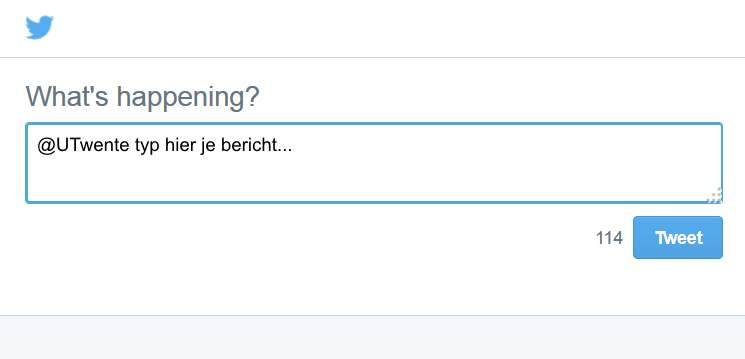
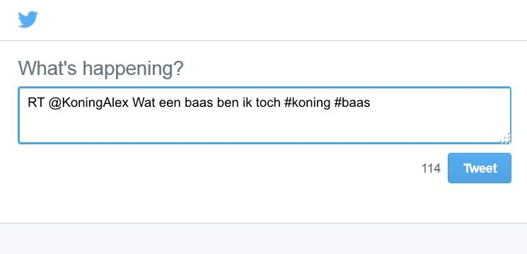

Vreselijke Batavierenrace #bata14: ik kon de weg naar het parcour niet vinden
Handleiding #CaDaBata
#CaDaBata werkt niet moeilijk. Het werkt eigenlijk gewoon eenvoudig. Snap je onze opzet niet helemaal? Lees dan de gebruiksaanwijzing even door. Veel zal je snel duidelijk worden!
Doel #CaDabata
Het doel van #CaDaBata is om snel op tweets te kunnen reageren (zonder daar zelf veel moeite voor te doen). Je hoeft niet meer te zoeken op #batavierenrace, dit doet #CaDaBata voor jou! Om het nog wat simpeler te maken selecteert het programma alle tweets die nuttig zijn om op te reageren of om te gebruiken voor een ander doeleinde.
Kolommen
CaDaBata is verdeeld in drie kolommen: negatief, alert en positief. In deze kolommen zie je gecategoriseerde tweets staan. Zo krijg je bijvoorbeeld alle tweets die een hoge prioriteit hebben (bijvoorbeeld meldingen van de brandweer) binnen in de kolom alerts. Tweets over mensen die niet tevreden zijn krijg je binnen via 'negatief'. Om het geheel nog wat positief te houden, is er nog een kolom met 'positief'. Je kunt deze tweets retweeten!


Twee ambulances ter plaatse op de Grote Markt in Enschede

Geweldige dag gehad, vooral de afsluiting op het plein was geweldig!#bata14
Opslaan
Wil je de tweet later nog een keer kunnen bekijken? Klik dan op opslaan. De tweet wordt dan gemarkeerd. Je kunt hem dan bekijken onder 'opgeslagen'. Kijk voor meer over de opslag van je tweets bij local storage.
Retweeten of reageren
Wil je retweeten of reageren? Klik dan op een van de knopjes. Er komt dan een popup die vraagt om in te loggen op je twitteraccount. Als je dan ingelogd bent kun je het bericht retweeten of reageren.
 Local storage
CaDaBata maakt gebruik van local storage. Het kan zijn dat jouw browser dit niet ondersteunt. Local storage werkt vanaf IE8, Firefox 3.5, Chrome 4 en vanaf Chrome for Android 38.
Classificatie tweets
De classificatie is gemaakt met behulp van 150 voorgeclassificeerde tweets. Hiermee is een trainingmodel gemaakt. Het kan zijn dat er in sommige kolommen verkeerde tweets terecht komen. We hebben er bewust voor gekozen wat meer 'onzin'-berichten in bepaalde kolommen te plaatsen, zodat we er zeker van zijn dat ook het grootste gedeelte van de berichten die daadwerkelijk daar terecht moeten komen, er ook terecht komen.
Ontwikkelaars
#CaDaBata is ontwikkeld door Tim Hintzbergen, Nico van Gerwen, Martijn de Vries (classificatie tweets m.b.v. WEKA), Karim el Assal (koppeling WEKA-EKA-CADA) en Tristan de Boer (layout en styling). Er wordt gebruik gemaakt van de ECA-toolkit beschikbaar gesteld door Universiteit Twente. Ook wordt gebruik gemaakt van Flot en Bootstrap.